Ожоги борщевиком – серьезная проблема в летние месяцы. Этот чрезвычайно устойчивый и мощный сорняк способен задавить тенью своих листьев любое растение и потому распространяется в средней полосе России год от года все больше.
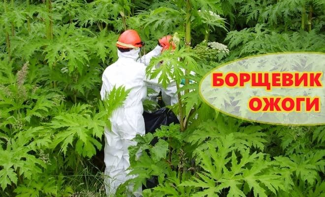
На листьях борщевика нет шипов и колючек, прикосновение к ним не вызывает сначала никаких неприятных ощущений. Опасны не поверхности растения, а его сок.
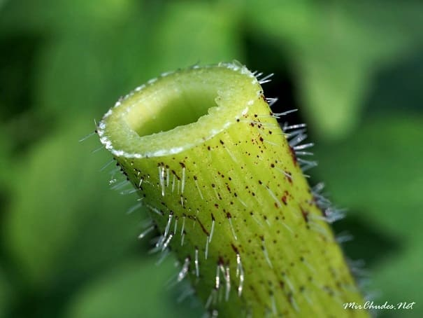
Сок попадает на кожу, вызывает повышенную чувствительность кожи к солнечным лучам, и после воздействия солнечного света, через 4–5 дней, начинается потемнение кожи в виду пятен с четкими границами.
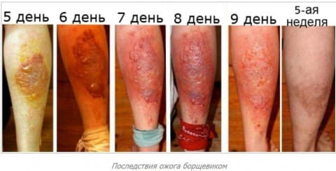
Никаких неприятных ощущений при этом нет. Далее в самом темном месте появляются пузыри, сперва их много, они мелкие, но очень быстро (за сутки) они сливаются в один большой пузырь, на всю площадь ожога.
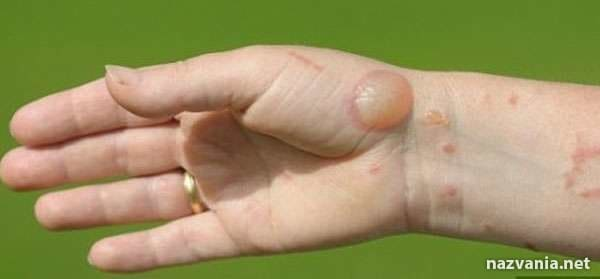
Пузыри напряженные, поднимающиеся над уровнем кожи до 0,5–1 см, наполнены прозрачным содержимым, однополостные. Пока пузырь цел, опять же никаких неприятных ощущений он не вызывает. Дети с интересом разглядывают пузырь, гладят, теребят, надкусывают его и т. д. Но стоит лишь выпустить серозную жидкость из пузыря, а еще хуже – содрать покрышку, как обнажается крайне болезненная кожа дна, и вот тут рана начинает сильно болеть. Она болит и сама по себе, но самую сильную боль вызывают прикосновения к ране, самые нежные, например одеждой и даже пером от подушки. Опытные люди стараются сохранить пузырь максимально долго, но даже если его не трогать совсем, через 4–5 дней он станет дряблым и лопнет сам.
Если вы заметили, что на кожу ребенка попал сок борщевика (особенно его много в «пеньках» скошенных стеблей борщевика) – немедленно и тщательно омойте эти участки кожи большим количеством проточной воды с мылом.
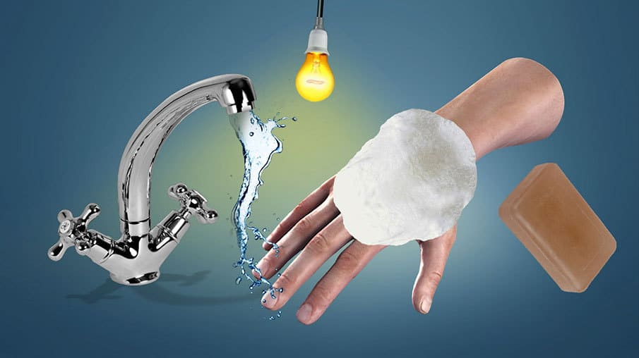
Фаза обильного мокнутия кончается за 4–5 дней, и даже если пузырь не лопнул, жидкость всасывается (но чаще вытекает), и покрышка пузыря прилипает к дну раны. Образуется гиперпигменти-рованная (потемневшая) корочка, тонкая, сперва она нежна и легко снимается, потом высыхает и крепко спаивается с дном раны, становится сухой. Рана в этом месте очень болезненна при малейшем касании. Струп трескается, крошится, задевает за одежду и при этом сильно болит, дети прикрывают его рукой, берегут, боясь боли.
Болезненность сохраняется не менее 1–2 недель и постепенно уходит. Корочка держится 2–3 недели и далее выкрашивается с краев, как любой другой струп, обнажая ярко-розовую, гладкую, блестящую поверхность новой кожи. По мере заживления кожи под струпом снижается и ее болезненность. К концу третьей недели струп сильно зудит, дети чешут и с удовольствием ковыряют края ногтем, отшелушивая темные кусочки струпа. Темные пятна на месте тяжелых ожогов могут оставаться несколько лет. Затем кожа полностью восстанавливает нормальный цвет.
Если вы упустили момент контакта ребенка с соком и пузыри все же возникли:
1. Не сдирайте пузыри, не протыкайте их, забинтуйте их нежной повязкой, берегите целостность пузырей как можно дольше.
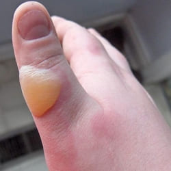
2. Обратитесь к врачу, он назначит местное лечение. Это могут быть примочки, кремы, мази (в зависимости от стадии болезни). Есть ненадежные доказательства о некоторой пользе топических стероидов при ожоге борщевиком. Но в целом это заболевание проходит самостоятельно и повлиять на скорость заживления ран практически нечем.
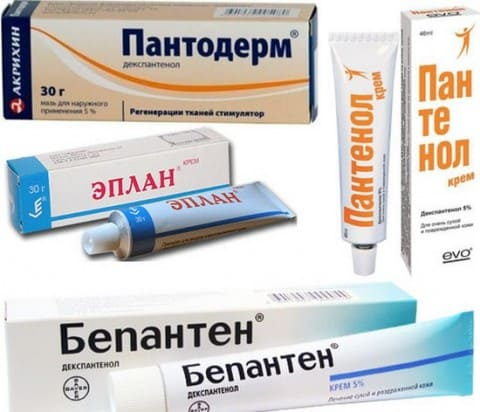
3. Обезбольте ребенка. Боль может мешать спать или двигаться. Закройте это место сухой нетугой повязкой (если врач не назначил иное), дайте сироп ибупрофена или парацетамола 2–3 раза в день.
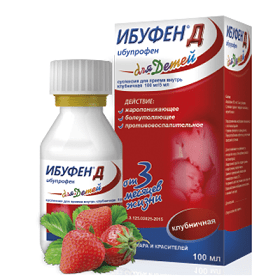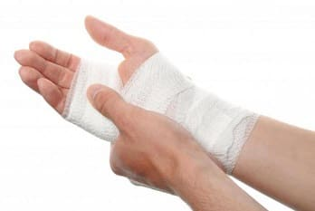
4. Следите за вторичной бактериальной инфекцией. Мокнущая поверхность ожога от борщевика – идеальные входные ворота для вторичной инфекции. Признаками вторичной инфекции являются: помутнение содержимого пузырей, отделение мутного зловонного экссудата (гноя), образование золотистых корочек по периферии поражений, покраснение и припухание краев ран, заметное усиление болезненности и повышение местной температуры кожи.
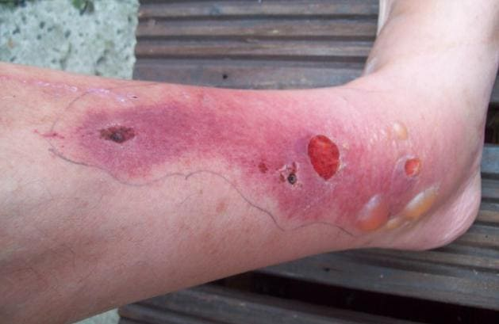
5. Давайте ребенку больше жидкости. Пусть он выпивает 1–2 литра в сутки, постепенно, понемногу, но часто. Мокнущие поверхности, особенно обширные – могут привести к обезвоживанию.
6. Если пузыри поражают значительную часть кожи (более 3-10 ладошек ребенка по площади), то врач скорее всего предложит госпитализацию в стационар; также госпитализация может быть необходимой при возникновении вторичных осложнений. Не отказывайтесь от госпитализации, если врач настаивает на ней, ситуация может быть довольно опасной.
При небольших площадях поражений и правильном ведении ран заболевание благополучно самостоятельно разрешается за 2–4 недели.
Если вы сами косите заросли борщевика, делайте это в пасмурную погоду и максимально защищайте все участки тела непромокаемой одеждой.
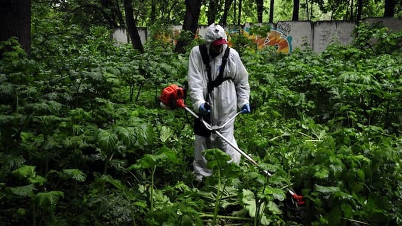
МЕРЫ ПРЕДОСТОРОЖНОСТИ
✗ Рассказывайте ребенку заранее о вреде борщевика, время от времени напоминайте ему, проверяйте знания.
✗ Запрещайте детям играть в тени зарослей борщевика.
✗ Не позволяйте детям ходить босиком по скошенной траве, если там есть пеньки борщевика (толстые трубочки, заполненные соком).
✗ Не разрешайте играть скошенными листьями, рубить борщевик палкой или рвать его руками.
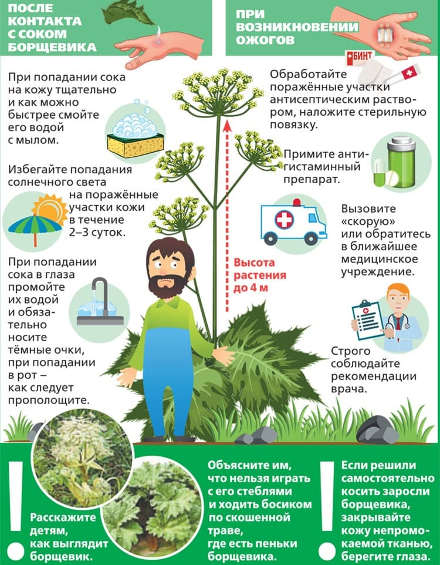
(Сергей Бутрий "Здоровье ребенка: современный подход")